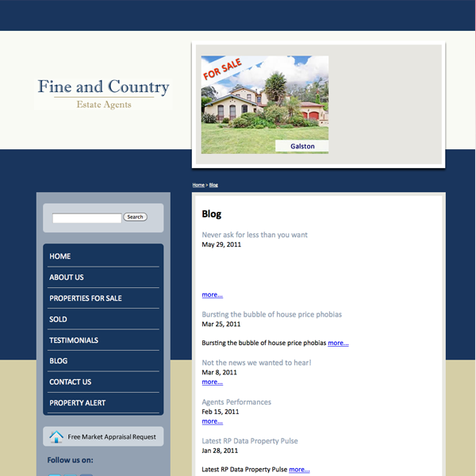
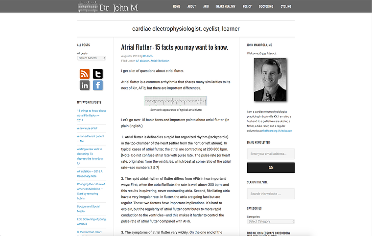

Multimedia Webpage
I created this Web page using html, css and a little bit of Bootstrap.
I liked the simple design of this site. The side bar on the left looked quite nice.
I designed the website with the idea of having two side bars and a center page.
where the left side bar contains links to pages relevant to that section.
The right side bar contains links to all of the projects that I have created.
The center section displays information relevant to current page being viewed.
I prefered having different sections on different pages as it makes it easier for one to navigate the site.
For bootstrap I used some components from
https://www.layoutit.com/
Websites that I looked at and liked the design of them
https://www.melonbooks.co.jp/
https://www.melonbooks.co.jp/
https://www.toranoana.jp/
https://yno.hatenablog.com/
http://www.saucedout.com.au/web_design/forums-blogs-social-media/blog-examples.shtml#

I liked the simple design of this site. The side bar on the left looked quite nice.
https://www.kunocreative.com/blog/healthcare-blog

I liked the three section design of this site. Where there are two side bars containing links on the right & left and the content in the center.